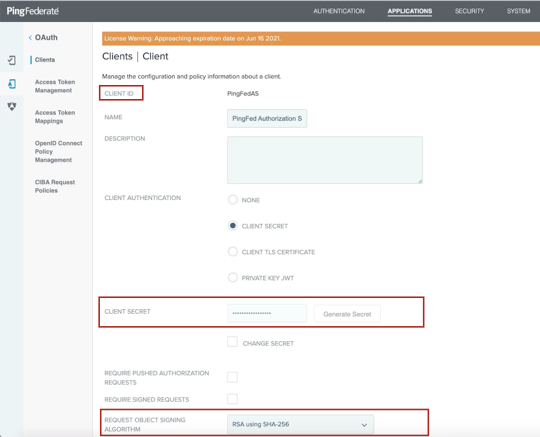
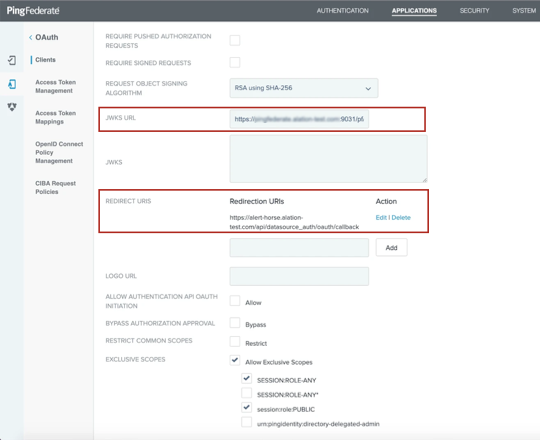
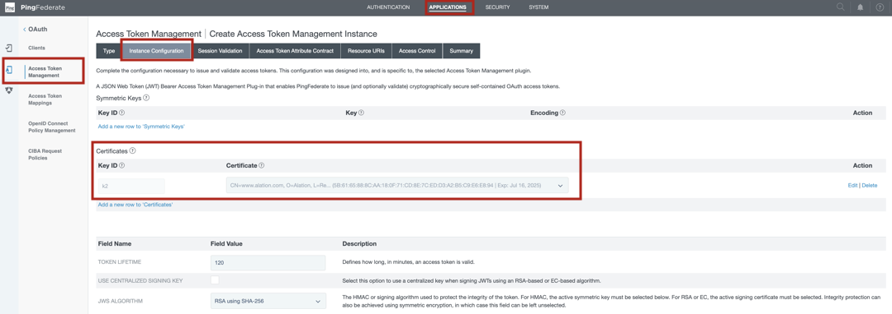
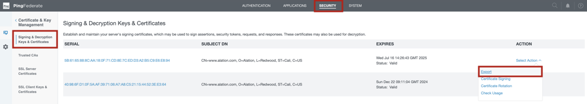

Configuration in PingFederate¶
Alation Cloud Service Applies to Alation Cloud Service instances of Alation
Customer Managed Applies to customer-managed instances of Alation
Use the recommendations on this page to configure External OAuth for a Snowflake data source with PingFederate as the authorization server.
Prerequisite¶
The steps below are an example of how you can configure Compose OAuth via PingFederate. PingFederate can be configured in multiple ways depending on the security policies and requirements at your organization. You may need to tailor this configuration to address your specific use case.
Note
These instructions assume that the authorization server for the Snowflake External OAuth already exists in PingFederate and that OAuth through PingFederate is already in use by Snowflake users. See Configure PingFederate for External OAuth in Snowflake documentation for their recommendations on configuring an External OAuth Authorization Server in PingFederate.
To configure Compose OAuth via PingFederate, follow this workflow:
Register a Client Application for Alation¶
You must be a PingFederate administrator to register client applications.
As you configure, we recommend creating a list of the values you’ll need in Alation. Store the list securely.
To register a client application for Alation:
In PingFederate, navigate to APPLICATIONS > OAuth Clients.
Click Add Client to create a new OAuth Client.
Provide unique CLIENT ID, NAME, and DESCRIPTION.
For CLIENT AUTHENTICATION, select CLIENT SECRET and generate a new secret.
Copy the CLIENT ID and CLIENT SECRET values and paste them to the list.
From the REQUEST OBJECT SIGNING ALGORITHM dropdown list, select the algorithm that is required for your PingFederate authorization server, for example RSA using SHA-256.
Update the JWKS URL field by adding the JWKS URL value of your PingFederate server. Example:
https://pingfederate2.alation-test.com:9031/pf/JWKSUpdate the REDIRECT URIS field by adding your Alation instance URL as a redirect URI. Use the following format:
https://<your_Alation_URL>/api/datasource_auth/oauth/callback. Example:https://my-catalog.alation-test.com/api/datasource_auth/oauth/callbackNote
No trailing slash at the end of the URI.
Allow the use of EXCLUSIVE SCOPES by selecting the Allow Exclusive Scopes checkbox and select the appropriate scopes. Save the scope value that you want to be the default for Alation to the list of values you’re collecting. Example:
SESSION:ROLE-ANY.For the ALLOWED GRANT TYPES parameter, select the checkboxes Authorization Code, Refresh Token, and Resource Owner Password Credentials.
Set DEFAULT ACCESS TOKEN MANAGER to the Token Management Instance that is in use with your Snowflake resource, for example JSON Web Tokens.
For REFRESH TOKEN ROLLING POLICY, leave Use Global Setting selected (default).
Under the OPENID CONNECT section, select your signing algorithm, for example, RSA using SHA-256.
Select OAuthPlayground as Policy.
Leave the rest of the settings default and save.
Next, you’ll need to collect information from PinFederate for the Snowflake security integration.
Collect Information for the Snowflake Security Integration¶
In PingFederate, locate the certificate that is in use with the Token Management Instance that works with the Snowflake authorization server:
Go to Applications > Access Token Management.
Click the name of the appropriate Token Management Instance.
Open the Instance Configuration tab of the settings page.
Locate the certificate under Certificates.
Note down the identifiers of the certificate, such as the serial, that will allow you to identify it in the certificates list.
Go to SECURITY > Signing & Decryption Keys & Certificates.
In the list of certificates, find the certificate you located in step 1.
For this certificate, in the Action column, click Export and export the certificate using the CERTIFICATE ONLY export option.
From the exported certificate, extract the public key using any method you prefer.
Save the public key value to the list of values you are collecting.
Create a Snowflake Security Integration¶
Log in to your Snowflake account.
Create an external security integration for Alation’s client using the information in Create a Security Integration in Snowflake. Use Alation client-specific values for these parameters:
external_oauth_rsa_public_key—Use the public key you extracted from the certificate in step 6.external_oauth_issuer—Use the OAuth client ID of Alation’s client application.
The rest of the parameters must be aligned with the parameters you configured for the security integration for the Snowflake authorization server.
Example:
create or replace security integration external_oauth_alation_pingfed type = external_oauth enabled = true external_oauth_type = ping_federate external_oauth_rsa_public_key = 'MIIBIjANBgkqhkiG9w0BAQEFAAOCA<...>qQIDAQAB' external_oauth_issuer = 'ALATIONCOMPOSE' external_oauth_token_user_mapping_claim = 'username' external_oauth_snowflake_user_mapping_attribute = 'login_name';
As you create the integration, save the value of the
external_oauth_token_user_mapping_claimparameter to the list of values you’re collecting for Alation.
Next, configure OAuth via PingFederate for your Snowflake data source.
Configure OAuth via PingFederate for Your Snowflake Data Source¶
Perform this configuration in Alation after completing these steps:
To enable OAuth in Compose for a Snowflake data source:
In Alation, open the data source Settings page.
Go to the Compose tab.
Locate the OAuth Connection block and select the checkbox Enable OAuth 2.0 in Compose. This reveals the parameters for OAuth setup.
Specify the OAuth connection information:
Property
Value
Client ID
Use the client ID of the app registration you created for Alation’s OAuth client.
Client Secret
Use the client secret of the OAuth client.
Request Refresh Tokens
Select this checkbox if Refresh tokens were allowed in the configuration of the authorization server.
Enable PKCE
Leave this checkbox clear if PKCE was not configured. Select it if you configured PKCE in the configuration of the authorization server.
Authorization Endpoint
Provide the value of the authorization endpoint of the PingFederate server.
Example:
https://pingfederate.alation-test.com:9031/as/authorization.oauth2Token Request Endpoint
Provide the value of the token endpoint parameter of the PingFederate server.
Example:
https://pingfederate.alation-test.com:9031/as/token.oauth2Default Scope
Provide the default scope.
Example:
SESSION:ROLE-ANY.Refresh Scope
This field will be available if you select the Request Refresh Tokens checkbox. Use the value
offline_access.Username Field/Claim
Use the value of the property
EXTERNAL_OAUTH_TOKEN_USER_MAPPING_CLAIMof the Snowflake security integration. Example:username.JWT
Select this checkbox.
Access token parameter name
Use the value
token.OAuth enablers
Use the value
authenticator=oauth.Click Save.
Edit the default Compose connection to use OAuth as described below or add a new OAuth-enabled Compose connection. To make the connection string OAuth-enabled, add the query parameter
authenticator=oauthto the connection URI with the&symbol as the separator. Example:snowflake://alation_test.us-east-1.snowflakecomputing.com:443/?warehouse=DEMO_WH&db=TEST&authenticator=oauthTest the configuration in Compose by connecting to your Snowflake data source and running a query. For more details, see Working with Data Source Connections.
{kind=link}